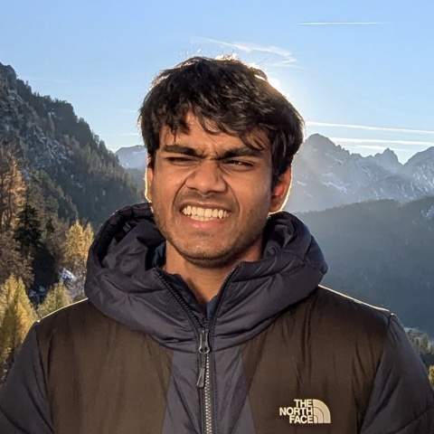

Arvindh Arun
I'm an AI researcher working on evaluating bottlenecks for closed-loop systems with LLMs, with a focus on long-horizon capabilities: forecasting real-world events, executing long tasks reliably, and harnesses that utilize memory better.
Most recently, I was a Research Scientist Intern at Sakana AI, working on pretraining Looped Transformers. Previously, I've also done research at/with Google DeepMind and JPMorgan Chase's Investment Banking division.
Alongside, I'm pursuing a PhD co-advised by Steffen Staab and Antonio Vergari as part of the ELLIS and IMPRS-IS PhD programs.
I enjoy technical and philosophical discussions about AI, so reach out.
News
- FutureSim will be presented as a featured poster at the Frontier Data Summit.
- Attending COLM in San Francisco 🇺🇸
- My internship work on pretraining Looped Language models will appear as a Spotlight at LP4M @ NeurIPS 2026.
- FutureSim accepted to NeurIPS 2026 (Evaluations & Datasets Track).
- FutureSim won the Best Paper Award at Forecasting as a New Frontier of Intelligence @ ICML 2026.
- Started as a Research Scientist intern at Sakana AI in Tokyo 🇯🇵
- Attending ICLR in Rio 🇧🇷
- Measuring Long Horizon Execution in LLMs accepted to ICLR 2026.
- Attending EMNLP in Suzhou 🇨🇳
- Our work on isolating and benchmarking long-horizon execution in LLMs accepted to MTI-LLM @ NeurIPS 2025.
- SEMMA, a foundation model for KGs, to appear in the main track of EMNLP 2025.
- Attending ICML in Vancouver 🇨🇦
- Attending Y Combinator's AI Startup School in San Francisco 🇺🇸
- Corrective Unlearning in GNNs accepted to ICML 2025.
- Now part of the MPI IMPRS-IS PhD program.
- Our work on controversial content detection won the Best Paper Award at BeyondFacts @ WWW 2025.
- Joined the ELLIS PhD Program, advised by Steffen Staab (ELLIS Unit Stuttgart 🇩🇪) and Antonio Vergari (University of Edinburgh 🇬🇧).
- Attending NAACL in Mexico City 🇲🇽 (virtually).
- Graduated with a BTech + MS in Computer Science from IIIT Hyderabad 🇮🇳
- Our work on network effects accepted to WOAH @ NAACL 2024.
- Attended Google Research Week 2024 in Bangalore.
- Started working with the InfoNet team at Google DeepMind.
- Attended ECAI 2023 in Kraków 🇵🇱 and visited ETH Zürich 🇨🇭
- Our work on imposing fairness constraints in GNNs accepted as an oral at ECAI 2023.
- Joined JPMorgan's Corporate & Investment Bank as an AI/ML intern.
- Research intern with Prof. Hong Cheng at the Chinese University of Hong Kong 🇭🇰
- Our work on fraud detection on the Google Play Store to appear at ACM Hypertext 2022.
- Our submission to the GermEval 2021 Shared Task ranked 6th globally.
- Joined the Precog lab for my master's thesis with Prof. Ponnurangam Kumaraguru.
Selected Publications
-
What Breaks Depth Extrapolation in Looped Language Models?
Arvindh Arun, Tianyu Zhao, Kai Arulkumaran
Spotlight, Linguistic Principles for Foundation Models @ NeurIPS 2026
-
FutureSim: Replaying World Events to Evaluate Adaptive Agents
Shashwat Goel*, Nikhil Chandak*, Arvindh Arun*, Ameya Prabhu, Steffen Staab, Moritz Hardt, Maksym Andriushchenko, Jonas Geiping
NeurIPS 2026
Best Paper Award, Forecasting as a New Frontier of Intelligence @ ICML 2026 -
The Illusion of Diminishing Returns: Measuring Long Horizon Execution in LLMs
Akshit Sinha*, Arvindh Arun*, Shashwat Goel*, Steffen Staab, Jonas Geiping
ICLR 2026
-
SEMMA: A Semantic Aware Knowledge Graph Foundation Model
Arvindh Arun, Sumit Kumar, Mojtaba Nayyeri, Bo Xiong, Ponnurangam Kumaraguru, Antonio Vergari, Steffen Staab
EMNLP 2025
-
A Cognac Shot to Forget Bad Memories: Corrective Unlearning in GNNs
Varshita Kolipaka, Akshit Sinha, Debangan Mishra, Sumit Kumar, Arvindh Arun*, Shashwat Goel*, Ponnurangam Kumaraguru
ICML 2025
* Equal contribution. Full list on Google Scholar.